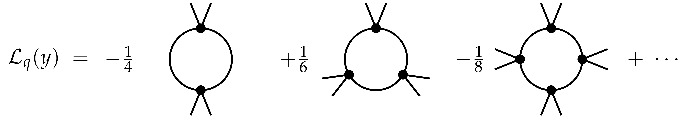
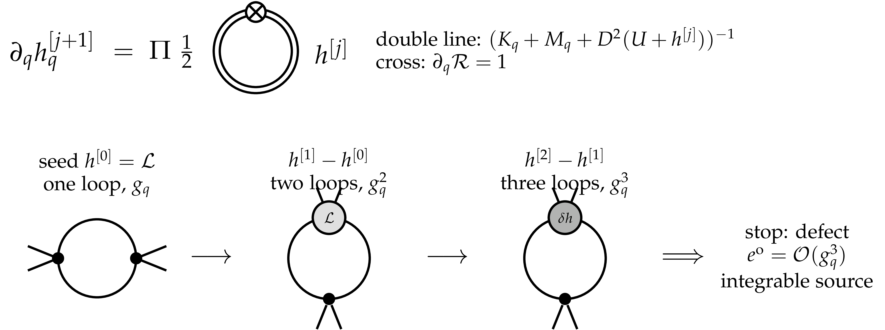
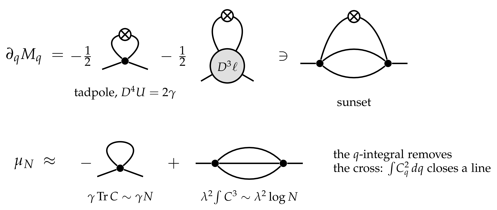
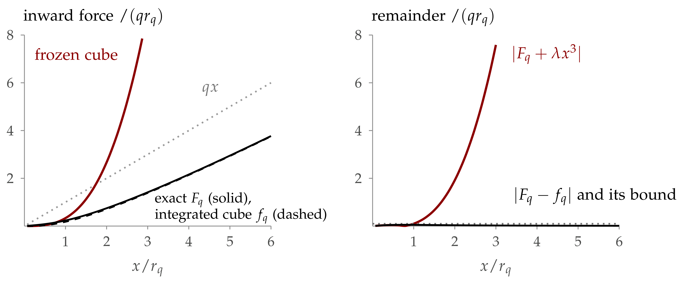

|
Abstract
The last two lectures construct the massive \(\Phi^4_3\) measure on the three-dimensional torus with the forward–backward equations of Lecture 4. In this lecture we set up the problem. For the mass regulator the Polchinski process of Lecture 4 is a noisy observation of the terminal field, and its forecast is the posterior mean; this gives an exact FBSDE at every lattice cutoff. Its backward half is the force equation of Lecture 4 in the forecast coordinate. We cannot solve that equation, so we construct an explicit approximate force and write the exact FBSDE in the coordinates it defines: the approximate forecast \(Y\) and the error \(Z\). The error is driven only by the failure of the approximate force to solve it. We explain why the approximate force needs two renormalisations, in two senses: a linearly and a logarithmically divergent mass counterterm, and two correction steps beyond one loop, which make the defect integrable in the backward equation. Finally we identify the large-field problem: the construction only controls fields of size \(r_q = (q / \gamma)^{1 / 2}\), and must be extended to all fields without losing coercivity. The price is an error that is not small but lives on large fields. Lecture 6 controls it by a priori estimates on the FBSDE and removes the cutoffs.
The results presented in Lectures 4–6 were obtained recently, with the use of AI, in collaboration with Sarah-Jean Meyer.
Introduction 2
10The problem and the exact FBSDE 3
10.1Lattice, scales and notation 3
The resolution parameter 3
10.2The cutoff measure and the goal 4
10.3The Polchinski process as a posterior 4
10.4The exact force in the forecast coordinate 5
10.5Approximate forecast and error 6
Exercises 7
11Renormalisation: why two of them 7
11.1Scales and power counting 7
The basic loop estimate 8
11.2The seed: one loop 8
11.3Corrections and the mass 9
The linear part 9
11.4Two mass renormalisations 11
11.5Two correction steps 11
11.6The explicit counterterm 12
Exercises 13
12The flow at large fields 13
12.1The large-field problem 13
A scalar model 13
12.2Clipping 14
12.3The complete defect 14
Where the large-field error comes from 15
The coordinate correction 15
12.4Why the Polchinski expansion is not enough 15
The exact force is linear at large fields 15
The field equation does not see the cube 16
What clipping does to the Burgers equation 17
Integrating the cube 17
12.5The force below the auxiliary scale 19
Exercises 20
References 20
Lecture 4 formulated a programme (Figure 7.1 and the remark following it): solve the FBSDE
with a renormalised interaction \(V_T\), with estimates uniform in the ultraviolet cutoff, and take the limit. For \(\Phi^4_3\) the force \(F_t\) is not expected to converge to an integrable terminal value, and the naive estimates of the force diverge (Appendix A.2 of Lecture 4). In these two lectures we carry out a version of the programme on the unit torus \(\mathbb{T}^3\). The guiding principle is the one of Section 8: do not estimate \(\Phi\) and \(F\) directly, but pass to the forecast coordinate, in which the forward equation has no drift and the tree diagrams have been integrated exactly. Section 12.4 shows on one site what goes wrong with a frozen cube, and what integrating it gives.
The plan. Figure 10.1 gives the plan: this lecture builds the approximate force \(\bar{\mathcal{F}}\); Lecture 6 does the estimates and the limits. The emphasis is on the structure of the argument. We give complete proofs of the identities and of the scalar models of the estimates, and only describe the tensor estimates on the lattice. The point of view is that of [BCG26]; for other constructions of \(\Phi^4_3\) see [GJ73, FO76, BFS83, BG20, GH21].
What is proved. Theorem 10.2 holds for every coupling and every mass, on a fixed torus, with no smallness, and for an explicit counterterm whose finite part is arbitrary. Section 18.7 lists what is not proved. Detailed proofs of what these lectures cite or condense are in the Supplement.
One auxiliary scale. The number \(q_0 > 0\) fixes the Gaussian reference \(C = C_{q_0}\); it may be small, for instance \(q_0 = 1\). The expansion of the force needs \(g_q\) small, and this happens above an auxiliary scale \(q_{\ast} \geqslant 1\), depending on \(\lambda\), \(q_0\) and on the finite part. Below it the coefficients are frozen (Section 12.5), so the force, the system and the results hold at all scales, and no statement about \(\nu\) depends on it. Since the measure \(\nu_N\) depends on \(q_0\) and \(\mu_N\) only through \(q_0 + \mu_N\), the finite part of the mass stays free.
Acknowledgements. The results presented in Lectures 4–6 are joint work with Sarah-Jean Meyer, obtained recently with the use of AI. M. Gubinelli is partly supported by UK Research and Innovation via the grant “StochFields” EP/Z534328/1 and by the Simons Collaboration on Probabilistic Paths to QFT. S.-J. Meyer is supported by the grant “StochFields” EP/Z534328/1.
Let \(N\) be an odd integer and \(\Lambda_N = (N^{- 1} \mathbb{Z}/\mathbb{Z})^3\) the periodic lattice of mesh \(N^{- 1}\) in the unit torus. Let \(H_N =\mathbb{R}^{\Lambda_N}\) with
so that the volume is \(1\) and integrals approximate continuum integrals. The nearest-neighbour Laplacian is \(\Delta_N u (x) = N^2 \sum_{i = 1}^3 [u (x + e_i / N) + u (x - e_i / N) - 2 u (x)]\); we usually drop the index \(N\). A kernel \(C (x, z)\) acts by \(Cu (x) = \int C (x, z) u (z) \mathrm{d} z\), so the identity has kernel \(N^3 \mathbb{1}_{x = z}\), and
\(M_f\) is multiplication by \(f\), and \(K + \gamma y^2\) means \(K + \gamma M_{y^2}\). For a functional \(F\) on \(H_N\), \(DF\), \(D^2 F\), \(D^k F\) are its gradient and derivatives, as in Lecture 3. \(\|u\|_p\) is the \(L^p\) norm for the measure \(\int\).
It is convenient to parametrise the resolution by the squared regulator mass
Set
| \(\displaystyle K_q := q - \Delta_N, \qquad C_q := K_q^{- 1}, \qquad C := C_{q_0} = (m^2 - \Delta_N)^{- 1} .\) | (10.1) |
In the notation of Lectures 3–4, with \(T = \infty\) and using \(q\) instead of \(t\) as the resolution variable (so \(\dot{Q}\) now means \(\partial_q Q_q\)),
| \(\displaystyle Q_q = C - C_q, \qquad \partial_q Q_q = C_q^2, \qquad \dot{Q}^{1 / 2} = C_q, \qquad S_q = C_q, \qquad \mathcal{R}_q = q - q_0, \qquad \partial_q \mathcal{R}_q = 1.\) | (10.2) |
So \(C_q\) is the covariance of the scales not yet resolved, and \(K_q = S_q^{- 1}\) is the precision of the posterior at resolution \(q\) under the free prior \(\mu^C\). The main properties of \(C_q\) are elementary.
Lemma
| \(\displaystyle a_2 (q) := (C_q^2) (x, x) = \text{Tr} C_q^2 \lesssim q^{- 1 / 2} \wedge N^3 q^{- 2}, \qquad \text{Tr} C_q \lesssim N \wedge N^3 q^{- 1} .\) | (10.3) |
For \(y \in H_N\) and \(\gamma > 0\), the killed resolvent \(G_q (y) = (K_q + \gamma y^2)^{- 1}\) satisfies \(0 \leqslant G_q (y) (x, z) \leqslant C_q (x, z)\).
Proof. \(C_q = \int_0^{\infty} \mathrm{e}^{- qs} \mathrm{e}^{s \Delta} \mathrm{d} s\) and \(\mathrm{e}^{s \Delta}\) is the transition kernel of the lattice random walk. This gives positivity and the row sums. Killing the walk at rate \(\gamma y^2\) gives the comparison for \(G_q\). The symbol of \(- \Delta_N\) is comparable to \(|k|^2\) on the centred frequency cube \(n \in \{- \frac{N - 1}{2}, \ldots, \frac{N - 1}{2} \}^3\) (symbol \(4 N^2 \sum_i \sin^2 (\pi n_i / N)\), with \(k = 2 \pi n\)), and \(\sum_k (q + |k|^2)^{- 2} \leqslant C \int_{\mathbb{R}^3} (q + |k|^2)^{- 2} \mathrm{d} k = Cq^{- 1 / 2}\). Counting the \(N^3\) modes gives the other bounds.\(\Box\)
The bubble \(a_2 (q)\) is the coincident-point variance of the shell at resolution \(q\): \(\partial_q \text{Var} (X_q (x)) = a_2 (q)\) for the free field at resolution \(q\), and \(\int_{q_0}^{\infty} a_2 = \text{Tr} C_{q_0} \asymp N\) is the divergent variance of the lattice field.
Fix \(\lambda > 0\) and put \(\gamma := 3 \lambda\) (not to be confused with the counterterm \(\gamma_T\) of Lecture 4). The interaction and the lattice measure are
where \(\mu^C\) is the centred Gaussian measure with covariance \(C = C_{q_0}\) on \(H_N\), and \(\mu_N \in \mathbb{R}\) is a mass counterterm to be chosen. With this normalisation \(D^2 U (y) = \gamma M_{y^2}\). In Lecture 4 we wrote the interaction as
the Wick ordering is now part of \(\mu_N\), and the coupling is rescaled by \(4\). For every real \(\mu_N\), \(\nu_N\) is a probability measure with all moments, since the quartic term dominates.
Theorem
Then:
the laws \(\nu_N\), embedded in \(H^{- s} (\mathbb{T}^3)\), \(s > \frac{1}{2}\), converge along the whole sequence to a measure \(\nu\), and \(\nu\) is an explicit density over the explicit flow from \(Y_{q_0} = 0\) (Theorem 18.5);
the forecast processes converge in law, along the whole sequence, tested at each scale and jointly with the terminal field, to a solution of a forward–backward system on \([q_0, \infty)\), \(Y_{q_0} = 0\), driven by a cylindrical Brownian motion, whose terminal value has the law \(\nu\); the forecast is \(\psi_q = m_q (\Phi_q)\) with \(m_q\) continuous (Theorem 18.6);
\(\nu\) has a renormalised variational formula (Theorem 18.12), and it satisfies the integration by parts formula of Theorem 18.8, in which the renormalised cube appears only tested in expectation, and it has quartic exponential tails for tested fields.
The bounds that prove (a) and (b) are uniform in \(N\): this is UV stability. They are bounds on the error \(Z\) of an approximate forecast, defined below. We now set up the exact FBSDE at fixed \(N\).
At fixed \(N\) everything in Sections 7–8 of Lecture 4 is a theorem. We need it in the profile (10.2), where the regulator is \(q - q_0\) and the terminal resolution \(q = \infty\).
Proposition
| \(\displaystyle \mathrm{d} \Phi_q = C_q^2 F_q \hspace{0.17em} \mathrm{d} q + C_q \hspace{0.17em} \mathrm{d} W_q, \qquad F_q =\mathbb{E}_q [- DV_N (\Phi_{\infty})], \) | (10.5) |
where \(W\) is a Brownian motion on \(H_N\), \(\mathbb{E}_q\) is the conditional expectation given \(\mathcal{F}_q = \sigma (\Phi_s : s \leqslant q)\), and \(\Phi_q \to \Phi_{\infty} \sim \nu_N\) as \(q \to \infty\) (by (10.6) below; see the proof of Lemma 16.1).
Proposition
the Polchinski process is a noisy observation of the terminal field: there is a Brownian motion \(B\) on \(H_N\), independent of \(\Phi_{\infty}\), with
| \(\displaystyle \Phi_q = (q - q_0) C_q \Phi_{\infty} + C_q B_{q - q_0} ; \) | (10.6) |
the forecast \(\psi_q =\mathbb{E}_q \Phi_{\infty} = \Phi_q + C_q F_q\) is a smooth function of \(\Phi_q\), \(\psi_q = m_q (\Phi_q)\), with \(Dm_q = \text{Cov}_q K_q\) invertible, where \(\text{Cov}_q = \text{Cov} (\Phi_{\infty} |\mathcal{F}_q) > 0\);
\(W\) is the innovation of the filter, and
| \(\displaystyle \mathrm{d} \psi_q = \text{Cov}_q \hspace{0.17em} \mathrm{d} W_q . \) | (10.7) |
Proof. In this profile \(J_q = (q - q_0) C_q\) and \(S_q = C_q\), so (a) is the bridge (7.14) and (c) the filter equation of Lecture 4. For (b), the conditional law of \(\Phi_{\infty}\) is \(\nu_N\) tilted by \(\exp (\langle K_q \Phi_q, \varphi \rangle - \frac{q - q_0}{2} \| \varphi \|_2^2)\) by (7.16): an exponential family in \(K_q \Phi_q\), whose mean has derivative the covariance.\(\Box\)
By Proposition 10.4(b) the map \(\Phi_q \mapsto \psi_q\) is invertible, and we define the exact force in the forecast coordinate \(\mathcal{F}_q\) (not to be confused with the filtration) by
| \(\displaystyle \Phi_q = \psi_q + C_q \mathcal{F}_q (\psi_q), \quad \text{i.e.} \quad K_q \Phi_q = K_q \psi_q +\mathcal{F}_q (\psi_q) . \) | (10.8) |
So \(F_q = -\mathcal{F}_q (\psi_q)\), the force of Theorem 8.2 of Lecture 4, and the second form is the field equation in the forecast coordinate. We write \(\text{Ctr}_E T\) for the contraction of two slots of a tensor \(T\) with a kernel \(E\), and \(H_q^{\text{ex}} (y) = (K_q + D\mathcal{F}_q (y))^{- 1}\).
Proposition
Proof. Differentiating (10.8) in \(\psi\) and using \(Dm_q = \text{Cov}_q K_q\) gives \(K_q + D\mathcal{F}_q (\psi_q) = \text{Cov}_q^{- 1}\). Apply Itô's formula to \(\Phi_q = \psi_q + C_q \mathcal{F}_q (\psi_q)\) with (10.5), (10.7) and \(\mathrm{d} C_q = - C_q^2 \hspace{0.17em} \mathrm{d} q\): the martingale parts agree, and the drifts differ by \(C_q\) times the left side of (10.9). At fixed \(N\) the forecast has full support, so this holds for all \(y\).\(\Box\)
This is the derivative of the Wetterich equation of Lecture 4 (Exercise 10.1). It is an identity about the unknown \(\nu_N\), not a construction. But since \(\mathrm{d} \psi_q = H_q^{\text{ex}} (\psi_q) \hspace{0.17em} \mathrm{d} W_q\), an approximate force gives approximate forecast coordinates, with an error governed by how badly it fails to solve (10.9).
Let \(\bar{\mathcal{F}}_q\) be, for \(q > 0\), an odd map on \(H_N\), continuous and piecewise smooth in \(q\) and \(y\), with \(D \bar{\mathcal{F}}_q\) symmetric and \(K_q + D \bar{\mathcal{F}}_q \geqslant \bar{c}_q I\) with \(\bar{c}_q > 0\). Define the approximate response, the force defect and its drift
| \(\displaystyle \mathcal{D}_q (y) : = \partial_q \bar{\mathcal{F}}_q (y) + \frac{1}{2} \text{Ctr}_{H_q (y)^2} D^2 \bar{\mathcal{F}}_q (y), \quad b_q (y) : = - H_q (y) \mathcal{D}_q (y) . \) | (10.10) |
The defect is the failure of \(\bar{\mathcal{F}}\) to solve (10.9). The map \(y \mapsto y + C_q \bar{\mathcal{F}}_q (y)\) is a bijection of \(H_N\). Define the approximate forecast and the error by
| \(\displaystyle Y_q + C_q \bar{\mathcal{F}}_q (Y_q) = \Phi_q, \quad Z_q : = \psi_q - Y_q, \quad \Xi_q : = \text{Cov}_q - H_q (Y_q) . \) | (10.11) |
Equivalently \(Y_q\) solves the approximate coordinate equation \(K_q \Phi_q = K_q Y_q + \bar{\mathcal{F}}_q (Y_q)\), which is (10.8) with \(\bar{\mathcal{F}}\) in place of \(\mathcal{F}\). If \(\bar{\mathcal{F}} =\mathcal{F}\) then \(Y = \psi\), \(Z = 0\), \(\mathcal{D}= 0\) and \(b = 0\).
Theorem
for \(q \geqslant q_0\), and \(Y + Z = \psi\) is the martingale \(\int \text{Cov} \hspace{0.17em} \mathrm{d} W\).
Proof. \(Y_q\) is a smooth function of \((q, \Phi_q)\), so it is an Itô process, \(\mathrm{d} Y = \beta \hspace{0.17em} \mathrm{d} q + A \hspace{0.17em} \mathrm{d} W\). Apply Itô's formula to \(Y_q + C_q \bar{\mathcal{F}}_q (Y_q) = \Phi_q\), with (10.5) and \(\mathrm{d} C_q = - C_q^2 \hspace{0.17em} \mathrm{d} q\), and multiply by \(K_q\): the martingale parts give \((K + D \bar{\mathcal{F}}) A = I\), so \(A = H\), and the drifts give
since \(CF = \psi - \Phi\) and \(C \bar{\mathcal{F}} (Y) = \Phi - Y\). Hence \(\beta = H (\psi - Y -\mathcal{D}) = HZ + b\), which is the first equation. The second is \(\mathrm{d} Z = \mathrm{d} \psi - \mathrm{d} Y\) and (10.7). The computation uses no initial value. At the reference scale \(\Phi_{q_0} = 0\), so \(Y_{q_0} = 0\) by oddness.\(\Box\)
UV stability means that the explicit force \(\bar{\mathcal{F}}\) computes the forecast up to an error \(Z\) which is small uniformly in \(N\).
For this we need: (i) a force defect \(\mathcal{D}\) integrable against the backward propagator, which is a deterministic renormalisation problem (Section 11); (ii) global coercivity of \(\bar{\mathcal{F}}\), so that \(H_q (y)\) is a good noise coefficient for all fields (Section 12); (iii) a priori estimates for the coupled system (Lecture 6). Figure 10.1 summarises the logic of the two lectures.
Exercise
Exercise
Exercise
Exercise
We now construct the force \(\bar{\mathcal{F}}_q\) on bounded fields. This section is deterministic: it uses no information on \(\nu_N\).
Two scales govern everything:
| \(\displaystyle g_q := \gamma q^{- 1 / 2}, \qquad r_q := (q / \gamma)^{1 / 2}, \qquad \gamma r_q^2 = q.\) | (11.1) |
\(g_q\) is the dimensionless coupling at resolution \(q\): in \(d = 3\) the coupling \(\lambda\) has dimension of mass, and \(q^{1 / 2}\) is the mass of the regulator. It is small at all scales \(q \geqslant q_{\ast}\) if \(g_{q_{\ast}} = \gamma q_{\ast}^{- 1 / 2}\) is small; this is the only large number in the construction, and it is not a physical mass. \(r_q\) is the field size at which the nonlinearity is comparable to the regulator: \(D^2 U (y) = \gamma y^2 \approx q\) when \(|y| \approx r_q\). Compare with the size of the free field at resolution \(q\):
so typical fields have size \(q^{1 / 4} = g_q^{1 / 2} r_q \ll r_q\).
We measure a \(k\)-tensor \(T (x_1, \ldots, x_k)\) (for instance a vertex with \(k\) legs, the kernel of the \((k - 1)\)th field derivative of a force) by its rooted norm
and a force \(g\) by
on the field ball
The natural size of the \(k\)-leg vertex of the loop corrections
to the bare force (\(U\prime = DU = \lambda y^3\) the bare force, \(M_q\) a linear mass term, Section 11.3) is
| \(\displaystyle \textsf{S}_k \lesssim g_q \hspace{0.17em} q \hspace{0.17em} r_q^{2 - k} .\) | (11.2) |
For \(k = 2\) this says the derivative of the correction force is
\(g_q\) times the regulator \(q\) (while \(D^2 U \approx q\) at \(|y|
\approx r_q\)); each extra field derivative costs \(r_q^{- 1}\). For \(k
= 4\), \(g_q qr_q^{- 2} = \gamma g_q\): the four-leg vertex of the
corrections is \(\gamma\) times the small coupling. The whole
construction is a bookkeeping of
A closed loop with \(p\) vertices, each carrying at least one external leg (vertices without external legs are resummed into \(H\)), and \(p + 1\) propagators \(H\) (two of them adjacent, \(H^2\), once the loop is closed) is estimated by rooting one external slot, using two propagators in \(L^2\) (each row has \(L^2\) norm \(\leqslant (a_2)^{1 / 2}\)) and the others in operator norm (\(\leqslant C / q\)):
| \(\displaystyle s (\text{loop}) \leqslant C \hspace{0.17em} a_2 \hspace{0.17em} q^{- (p - 1)} \prod_{i = 1}^p s (T_i)\) | (11.3) |
Indeed, by cyclicity of the trace we may take the rooted slot \(x\) on \(T_1\). Integrating out the other external legs, each \(T_i\), \(i \geqslant 2\), is dominated by a kernel \(t_i (u, v)\) in its two internal legs whose rows and columns have \(L^1\) norm \(\leqslant s (T_i)\), so \(\|t_i \|_{2 \to 2} \leqslant s (T_i)\) by Schur's test; \(T_1\) with \(x\) fixed gives a kernel \(t_1^x\) with \(\int t_1^x \leqslant s (T_1)\). The rest of the loop is a kernel \(|H| R |H|\), where the two propagators next to \(T_1\) are kept apart and \(R\) collects the other \(p - 1\) propagators and \(t_2, \ldots, t_p\). By Cauchy–Schwarz its entries are bounded by \(\sup_x \|H (x, \cdot)\|_2^2 \|R\|_{2 \to 2} \leqslant Ca_2 (C / q)^{p - 1} \prod_{i \geqslant 2} s (T_i)\), and integrating against \(t_1^x\) gives (11.3). We used only that the propagators are symmetric with rows of \(L^2\) norm \(\leqslant Ca_2^{1 / 2}\) and of \(L^1\) norm \(\leqslant C / q\), which also bounds their operator norm on \(L^2\). For the free resolvent these are \(\int C_q (x, z)^2 \mathrm{d} z = a_2\) and \(\int C_q (x, z) \mathrm{d} z = q^{- 1}\) (Lemma 10.1); for the propagators used below they are (12.3), and Lemma 20.1 of the Supplement.
The vertices of the bare force have
on the ball (\(D^3 U = 2 \gamma y\), \(D^4 U = 2 \gamma\)). With \(a_2
\leqslant Cq^{- 1 / 2}\), a loop with \(k\) external legs built from
them is \(\leqslant Cq^{1 / 2} r_q^{- k}\), and after the integration in
\(q\) that produces the force \(\mathcal{F}\) (which gains a factor
\(q\)) it has size \(q^{3 / 2} r_q^{- k} = g_q qr_q^{2 - k}\): this is
the origin of
The first approximation is the one-loop formula of Exercise 8.6(b): replace \(D\mathcal{F}\) by \(DU\prime = \gamma y^2\) in the force equation and integrate from \(q = \infty\). With the linear part subtracted this gives the seed
| \(\displaystyle \ell_q (y) (x) = \gamma y (x) [G_q (y) (x, x) - C_q (x, x)], \quad \partial_q \ell_q (y) (x) = - \gamma y (x) [G_q (y)^2 (x, x) - a_2 (q)], \) | (11.4) |
with \(G_q (y) = (K_q + \gamma y^2)^{- 1}\). It is odd, and its linear Taylor coefficient at \(y = 0\) vanishes. Its expansion in powers of the field,
is the sum of one-loop diagrams with \(2 j\) external legs, one of them the output \(x\). The leading term is the bubble
with
as predicted by (11.2).
 |
Figure 11.1. The seed |
The seed solves the force equation only with \(DU\prime\) inside the loop. Its defect is of relative size \(g_q\) compared with the one-loop flow \(q^{1 / 2} r_q^{- k}\) (two loops). To improve it, let
remove the linear Taylor coefficient (the low jet) of an odd force, let
be a linear operator path (a running mass \(\mu_q\) and an even, translation-invariant, centred kernel \(\Theta_q\), \(\Theta_q \mathbb{1} = 0\)), and set
| \(\displaystyle \mathcal{T}_q [M, \ell] (y) : = - \frac{1}{2} \text{Ctr}_{R^2} D^2 (U\prime + \ell) (y), \quad R = (K_q + M_q + D (U\prime + \ell) (y))^{- 1} . \) | (11.5) |
The approximate force on the field ball is
| \(\displaystyle \mathcal{F}^o_q (y) = U\prime (y) + M_q y + \ell^{[2]}_q (y), \) | (11.6) |
with the nonlinear part built by two integrated steps of the force equation,
| \(\displaystyle \ell^{[0]} = \ell, \quad \ell^{[j + 1]}_q = \ell_q - \int_q^{\infty} \Pi (\mathcal{T}_s [M, \ell^{[j]}] - \partial_s \ell_s) \hspace{0.17em} \mathrm{d} s, \quad j = 0, 1, \) | (11.7) |
so that
each step inserts the previous approximation into the loop. The integrals run from \(\infty\): the nonlinear part is fixed by the requirement that it vanishes at infinite resolution, where \(\mathcal{F}_q\) must become the bare force (Theorem 8.2).
 |
Figure 11.2. The iteration |
| \(\displaystyle \partial_q M_q = B_q [M] := - \gamma \text{Tr} (R_{0, q}^2) I - \tfrac{1}{2} \text{Ctr}_{R_{0, q}^2} D^3 \ell^{[2]}_q (0),\) | (11.8) |
(the source \(B_q [M]\) is not the sampling Brownian motion \(B\)), with the mixed boundary conditions
(the latter in first spatial moment). The running mass is pinned at the auxiliary scale \(q_{\ast}\), at a value \(b\) with \(|b| \leqslant B \gamma q_{\ast}^{1 / 2}\), while the nonlocal kernel is pinned at infinity. The bare mass is then
| \(\displaystyle \mu_N = \lim_{q \to \infty} \mu_q = b + \int_{q_{\ast}}^{\infty} \beta_q \hspace{0.17em} \mathrm{d} q, \qquad B_q \mathbb{1} = \beta_q \mathbb{1},\) | (11.9) |
and it is this number that enters the Gibbs measure
Proposition
| \(\displaystyle | \mu_q | \leqslant C \gamma \sqrt{q}, \qquad v_1 (\Theta_q) \leqslant C \gamma^2 q^{- 1 / 2}, \qquad \| \partial_q M_q \|_{\text{row}} \leqslant Cg_q,\) | (11.10) |
where \(v_1 (\Theta) = \int d (0, z) | \Theta (0, z) | \mathrm{d} z\). The seed obeys \(\mathcal{N}_{k, q} (\ell) \leqslant C_k g_q qr_q^{2 - k}\), \(4 \leqslant k \leqslant 10\), and the corrections obey
where \(\mathcal{N}_{k, q} (f) = \textsf{S}_k (f) + \sqrt{q} \hspace{0.17em} v_1 (D^{k - 1} f (0))\), and for a \(k\)-tensor
The complete defect of \(\mathcal{F}^{\text{o}}\) on the ball is \(\mathcal{D}^{\text{o}}_q = \Pi (\mathcal{T}_q [M, \ell^{[1]}] -\mathcal{T}_q [M, \ell^{[2]}])\), and
| \(\displaystyle \textsf{S}_4 (\mathcal{D}^{\text{o}}_q) \leqslant C \gamma^5 q^{- 3} .\) | (11.12) |
At fixed \(N\) the bare mass exists, \(| \mu_N - b| \lesssim \gamma \text{Tr} C_{q_{\ast}} \lesssim \gamma N\), and \(| \mu_N - \mu_q | \leqslant C \gamma N^3 / q\), \(\| \Theta_q \|_{\text{row}} \leqslant CN \gamma^2 q^{- 1 / 2} \to 0\) as \(q \to \infty\).
Idea of the proof (complete proof: Proposition 20.6
of the Supplement). (a) Loop Lipschitz estimate. If
two corrections \(\ell, \hat{\ell}\) obey the individual bounds
Two technical points are hidden in this sketch. First, the loop estimate (a) needs more derivatives than it controls: the \(k\)-leg vertex of the loop involves vertices with \(k + 2\) legs. Ten legs of the seed leave eight after one step and six after two; this is why the number of steps must be finite and fixed in advance (an infinite iteration loses all derivatives). Second, the nonlocal kernel \(\Theta_q\) must be measured in a first spatial moment \(v_1\), not in a second one: the estimate \(\| \delta_z^2 C_q \|_{\text{row}} \lesssim d (0, z)^2\), which a second moment would require, fails by a logarithm, and one uses \(\| \delta_z^2 C_q \|_{\text{row}} \lesssim q^{- 1 / 2} d (0, z)\) instead (Lemma 19.3 of the Supplement). This is also why \(\mathcal{N}_k\) contains a spatial moment at \(y = 0\).
The bare mass \(\mu_N\) diverges as \(N \to \infty\). Its two divergent parts are the two divergent self-energy diagrams of Appendix A.2 of Lecture 4.
The tadpole. The first term of
The sunset. The second term contracts the bubble contained
in \(D^3 \ell^{[2]} (0)\) (the cubic coefficient of the seed force)
with \(R_0^2\), and integrating in \(q\) produces the two-loop
self-energy, which diverges like \(\lambda^2 \int_{|z| > 1 / N}
|z|^{- 3} \mathrm{d} z \sim \lambda^2 \log N\). This is the sunset
counterterm \(\gamma_T \sim \log T\) of (A.7) of
Lecture 4: with \(\lambda_{\text{L4}} = \lambda / 4\) and \(\gamma_T
\int H_2 = \gamma_T \int \varphi^2 +\)const, the sunset part of
\(\mu_N\) is \(2 \gamma_T = 6 \lambda^2 \int C^3 \approx \frac{3
\lambda^2}{8 \pi^2} \log N\), positive. (The double-tadpole
logarithms in the two terms of
 |
Figure 11.3. The mass equation
|
Power counting (Exercise A.3 of Lecture 4) says that no
other counterterm is needed. In the flow this is the statement that the
integrals
There is a subtlety: the running mass \(\mu_q\) at fixed \(q\) has a limit as \(N \to \infty\), but \(\mu_N = \mu_{\infty}\) does not. One never interchanges these two limits. Also, the whole running kernel \(\Theta_q\) is kept: replacing the sunset by its local part would leave a nonlocal remainder of the wrong size.
Why two corrections, and not one or three? The answer is in the backward
equation of
where we used that the low jet of \(\mathcal{D}\) vanishes, so on the ball \(|\mathcal{D}| \leqslant \textsf{S}_4 (\mathcal{D}) |y|^3 / 6\). After \(n\) correction steps the defect is the loop difference of the last two approximations, of relative size \(g^{n + 1}\): by the loop estimate,
and therefore
steps \(n\)
\(\textsf{S}_4 (\mathcal{D}_s)\)
\(|b_s |\)
\(\int_q^{\infty} \frac{s}{q} |b_s | \mathrm{d}
s\)
\(0\) (seed only)
\(\gamma^3 s^{- 2}\)
\(\gamma^{3 / 2} s^{- 3 / 2}\)
\(\infty\) (power)
\(1\)
\(\gamma^4 s^{- 5 / 2}\)
\(\gamma^{5 / 2} s^{- 2}\)
\(\infty\) (logarithm)
\(2\)
\(\gamma^5 s^{- 3}\)
\(\gamma^{7 / 2} s^{- 5 / 2}\)
\(2 \gamma^{7 / 2} q^{- 3 / 2}\)
With one step the bounded-field source produces a logarithmically divergent error; two steps are the minimum, and they suffice: \(Z^{\text{b}}_q = O (q^{- 3 / 2})\), and the backward energy \(\gamma^{- 1} \int q^{1 / 2} |Z^{\text{b}} |^2 \mathrm{d} q\) is finite (Lecture 6). The general (fractional) theory gives the depth criterion \((n + 2) \varkappa > (3 + \varkappa) / 2\), with subcriticality \(\varkappa = \frac{1}{2}\) for \(\Phi^4_3\): \((2 + 2) \cdot \frac{1}{2} = 2 > \frac{7}{4}\), while \(n = 1\) gives \(\frac{3}{2} < \frac{7}{4}\). This is a sufficient condition, which loses \(\varkappa / 2\); for \(\Phi^4_3\) the heuristic above shows that \(n > 1\) suffices, with \(n = 1\) borderline.
The two senses of “two renormalisations” are related. The mass counterterm must contain the sunset because the quartic vertex of the corrections, already of the seed, contains the bubble, and contracting it produces the sunset; and the second step is needed because the defect of the first one, the three-loop remainder, is borderline in the backward equation, exactly as the sunset is borderline in the mass.
Formula (11.9) gives \(\mu_N\) as an output of the flow, from the boundary value \(b\). The input can be made explicit, and this also fixes what the finite part is.
Theorem
| \(\displaystyle \beta_q = - \gamma a_2 - \gamma \mu_q a_2' + \gamma^2 a_2^2 + 2 \gamma^2 \int C_q^2 C_q^{(2)} +\mathcal{R}_q, \quad |\mathcal{R}_q | \leqslant C \gamma^3 q^{- 3 / 2}, \) | (11.14) |
and so, for \(f_N (b) = \mu_N (b) + 3 \lambda \text{Tr} C - 6 \lambda^2 \int C^3\),
Moreover \(|f_N (b_1) - f_N (b_2) - (b_1 - b_2) | \leqslant Cg_{q_{\ast}} |b_1 - b_2 |\), and \(f_N \to f\) pointwise along the whole sequence. Consequently, for \(B\) above a universal constant, every \(r \in \mathbb{R}\) and \(q_{\ast}\) large depending on \(\lambda, q_0, B, r\), there is a unique \(b_N\) with
| \(\displaystyle \mu_N = r - 3 \lambda \text{Tr} C + 6 \lambda^2 \int C^3, \) | (11.16) |
and \(b_N\) converges along the whole sequence.
Proof. Expansion. Expand \(R_0 = C - CMC + CMCMR_0\) with \(C = C_q\). Since \(a_2' = - 2 \text{Tr} C^3\), the first term of (11.8) is \(- \gamma a_2 - \gamma \mu a_2' + 2 \gamma \text{Tr} (C^3 \Theta)\), up to \(O (\gamma a_2 g_q^2)\), and \(| \text{Tr} (C^3 \Theta) | \leqslant Cq^{- 1} v_1 (\Theta)\) because \(| \hat{\Theta} (k) | \leqslant 2 |k| v_1\). The corrections in \(\ell^{[2]}\) give \(O (\gamma^3 q^{- 3 / 2})\) after contraction, by (11.11). The cubic part of the seed is \(- \gamma^2 y (x) \int C^2 (x, z) y (z)^2\), and contracting its third derivative at zero with \(R_0^2\) gives the operator \(\gamma^2 a_2 \text{diag} (R_0^2) + 2 \gamma^2 C^2 \cdot R_0^2\), where \(\cdot\) is the pointwise product of kernels. Its constant-mode eigenvalue, with \(R_0^2\) replaced by \(C^2\) at a relative cost \(g_q\), gives the remaining two terms.
Integration. Use \(\partial_q \text{Tr} C_q = - a_2\), \(\partial_q \int C_q^3 = - 3 \int C_q^2 C_q^{(2)}\), and \(- \gamma \mu a_2' + \gamma^2 a_2^2 = - \gamma \partial_q (\mu a_2) + \gamma (\beta + \gamma a_2) a_2\). This is the cancellation of the double-tadpole logarithms: \(\beta + \gamma a_2 = O (\gamma^2 / q)\). At fixed \(N\) the boundary terms at \(q = \infty\) vanish, which gives (11.15).
Response. For two boundary values with difference \(\delta b\), put \(D = \sup_q | \delta \mu_q |\) and \(X = \sup_q q^{3 / 2} v_1 (\delta \Theta_q)\), which are finite at fixed \(N\). The loop comparison gives \(| \delta \beta_q | \leqslant C \gamma (Dq^{- 3 / 2} + Xq^{- 5 / 2})\) and \(v_1 (\delta B_q - \delta \beta_q I) \leqslant C \gamma^2 (Dq^{- 5 / 2} + Xq^{- 7 / 2})\), so \(X \leqslant C \gamma^2 D + C \gamma^2 q_{\ast}^{- 1} X\) and \(D \leqslant | \delta b| + C \gamma q_{\ast}^{- 1 / 2} D + C \gamma q_{\ast}^{- 3 / 2} X\). Hence \(D \leqslant 2 | \delta b|\), and integrating \(\delta \beta\) gives the claim.
Limit and inversion. In (11.15), \(\text{Tr} C - \text{Tr} C_{q_{\ast}}\) has summable terms \(\lesssim (1 + |k|)^{- 4}\); \(C - C_{q_{\ast}}\) converges uniformly and \(C^2 + CC_{q_{\ast}} + C_{q_{\ast}}^2\) in \(L^1\); and the integrand converges at fixed \(q\) by consistency of the coefficients, dominated by \(C \gamma^3 q^{- 3 / 2}\). As \(\text{Tr} C - \text{Tr} C_{q_{\ast}} \leqslant C + q_{\ast}^{1 / 2} / 10\) uniformly in \(N\), the range of \(f_N\) contains \(r\) for \(B\) above a universal constant and \(q_{\ast}\) large. Monotonicity and pointwise convergence give the convergence of \(b_N\).\(\Box\)
The boundary value \(b\) is not the finite part: by (11.15), \(f_N (b) \approx b + \gamma q_{\ast}^{1 / 2} / (4 \pi)\) at leading order, so at fixed \(b\), raising \(q_{\ast}\) changes the theory.
Exercise
Exercise
Exercise
Exercise
All the estimates of Proposition 11.1 hold on the field ball \(\|y\|_{\infty} < 2 r_q\), and only there. But the forecast \(Y_q\) is a random field on \(N^3\) sites, and nothing prevents it from being larger than \(r_q\) somewhere. The free field has typical size \(q^{1 / 4} \ll r_q\), but it exceeds \(r_q\) with small, nonzero probability, and nothing a priori controls the interacting forecast. We need a force \(\bar{\mathcal{F}}_q\) defined and uniformly coercive for all fields, which agrees with \(\mathcal{F}^{\text{o}}_q\) for \(\|y\|_{\infty} \leqslant r_q\).
The structure to preserve is coercivity, and it is carried by the bare cube. In the scalar model the coordinate equation \(qy + \lambda y^3 = q \Phi_q\) has noise coefficient
large fields are more elliptic and less noisy. A good large-field extension keeps \(U\) untouched and freezes only the correction.
Let \(\tau : \mathbb{R} \to \mathbb{R}\) be smooth and odd, \(\tau (u) = u\) on \([- 1, 1]\), constant outside \([- 2, 2]\), with \(0 \leqslant \tau' \leqslant 1\), and set
The clip acts pointwise in space and maps every field into the ball, and the factor \(D \kappa_q\) is what keeps the clipped force a gradient. The cubic and linear parts are not clipped. By the chain rule, with factors \(| \kappa_q^{(b)} | \leqslant Cr_q^{1 - b}\), the clipped correction obeys the same bounds (11.2) globally:
| \(\displaystyle s (D^{j - 1} \tilde{\ell}_q) \leqslant Cg_q qr_q^{2 - j} \quad (j = 2, 3, 4), \quad s (D \partial_q \tilde{\ell}_q) \leqslant Cg_q, \) | (12.2) |
for all \(y \in H_N\); the scale derivative includes the motion of the clip, \(\partial_q \kappa_q = O (r_q / q)\).
Lemma
Idea. \(H^{- 1} = K_q + \gamma y^2 + M_q + D \tilde{\ell}_q\), and \(M_q + D \tilde{\ell}_q\) is small relative to \(K_q\): \(\|D \tilde{\ell}_q \| \leqslant Cg_q q\), and \(M_q\) is small after multiplication by \(C_q\) (the centred kernel is controlled by its first moment, Exercise 12.1). Write \(H = (I + G (M + D \tilde{\ell}))^{- 1} G\) with \(G = (K_q + \gamma y^2)^{- 1}\) and use the Neumann series and Lemma 10.1.\(\Box\)
So \(\bar{\mathcal{F}}_q\) is a globally coercive force, and Theorem 10.6 applies.
On the set \(\{\|y\|_{\infty} \leqslant r_q \}\) the clip is the
identity and the defect is \(\mathcal{D}^{\text{o}}\), of size
and let \(\chi_q (y) = \mathbb{1}_{|y| > r_q}\) (pointwise) and \(t_q (y) = y \hspace{0.17em} \chi_q (y)\), the field restricted to the large-field set.
Proposition
Moreover \(\|b_q (y)\|_p \leqslant C \gamma q^{- 3 / 2} \|y\|_p\).
The complete proof is Lemma 21.2 of the Supplement. The
first bound is
the mass term \(M\prime y - JM\prime z\): the linear part is not clipped, but its flow was computed at \(z\);
the motion of the clip, \(JD \ell (z) \partial_q \kappa + (D \partial_q \kappa)^{\ast} \ell (z)\);
\(\gamma (y - Jz) \text{diag} H^2\) and \(\gamma Jz \text{diag} (H^2 - (H^o)^2)\): the cubic vertex sees \(y\), the correction sees \(z\), and the two responses differ by \(\gamma (y^2 - z^2)\) and by the chain-rule terms of the clipped derivative, all supported on \(|y| > r_q\);
the contraction of \(D^2 \tilde{\ell} - JD^2 \ell (z)\) (the chain rule produces terms with \(\kappa \prime\prime\), \(\kappa \prime\prime\prime\), supported on large fields) and of \(D^2 \ell\) with \(H^2 - (H^o)^2\).
Each group vanishes if \(\|y\|_{\infty} \leqslant r_q\), and each is bounded by \(g_q\) times \(|t|\) or \(r^{- 1} y^2 \chi\), in \(L^p\), by the same loop estimates (Section 21.3 of the Supplement; Exercise 12.2 for the one-site version). There is no cancellation to exploit: the clipping error is genuinely of the size \((g_q / q) |y|\) of the whole drift on the large-field set. What saves us is that this set is rarely visited, and its occupation is controlled by the coercivity of the actual dynamics. Lecture 6 controls it through the large-field action (13.6).
| \(\displaystyle K_q \Phi_q = K_q (Y_q + \varrho_q (Y_q)) + \tfrac{\gamma}{3} Y_q^3, \qquad \varrho_q (y) := C_q (M_q y + \tilde{\ell}_q (y)),\) | (12.5) |
using \(DU (y) = \lambda y^3 = \frac{\gamma}{3} y^3\). The correction is a small contraction, \(\|D \varrho_q (y)\|_{p \to p} \leqslant \varepsilon_q := C (g_q + g_q^2)\), for all \(y\) and \(1 \leqslant p \leqslant \infty\), and \(\varrho_q (0) = 0\) by oddness. So, up to a small Lipschitz perturbation, the forecast is the solution of the cubic elliptic equation \(K_q (Y + \varrho) + \frac{\gamma}{3} Y^3 = K_q \Phi_q\) driven by the field at resolution \(q\). This is the equation whose coercivity Lecture 6 exploits.
Lecture 4 gives two exact descriptions of the flow: the Burgers equation for the force \(F\) at the field \(\Phi\), and the force equation at the forecast \(\psi\). We use the second, here and in Lecture 6. The first looks more economical, and the following programme is natural. Keep the bare cube \(- \lambda \varphi^3\) unclipped, so that the approximate force stays coercive at all fields. Expand the rest of the force in perturbation theory and clip only these higher orders. Pay for the clipping in the source of the equation for the remainder \(R = F - f\), using the a priori estimates. No change of coordinates would be needed.
Here we test the programme where everything can be computed: on one site. There is no spatial structure and no renormalisation, so whatever goes wrong has nothing to do with divergences.
Conventions. As in Exercise 10.4: \(N = 1\), \(\Delta = 0\), \(K_q = q\), \(V (\varphi) = \frac{\lambda}{4} \varphi^4\), \(\gamma = 3 \lambda\) and \(r_q = (q / \gamma)^{1 / 2}\). We write \(S = C_q = 1 / q\) for the remaining covariance, and \(x\) for the value of the field at resolution \(q\).
where \(\mathbb{E}_x\) is the expectation for the probability density proportional to \(\mathrm{e}^{- \frac{\lambda}{4} y^4 - \frac{q}{2} (y - x)^2}\). It solves the Burgers equation
| \(\displaystyle \partial_q F + \frac{1}{2} S^2 F\prime\prime + S^2 FF\prime = 0. \) | (12.6) |
Let \(m_q (x) =\mathbb{E}_x Y\). Integrating by parts in \(y\) gives
| \(\displaystyle F_q (x) = - \lambda \mathbb{E}_x Y^3 = q (m_q (x) - x) . \) | (12.7) |
This is Proposition 10.4(b): the posterior mean is the forecast, \(\psi_q = m_q (\Phi_q)\). So \(F_q\) measures how far the forecast lies behind the field.
Lemma
Proof. Integrating the derivative of \(y\) times the density gives \(\lambda \mathbb{E}_x Y^4 + q\mathbb{E}_x Y^2 - qx\mathbb{E}_x Y = 1\). With \(M = (\mathbb{E}_x Y^4)^{1 / 4}\) this gives \(\lambda M^4 \leqslant 1 + q |x| M\), and Young's inequality gives \(\frac{\lambda}{2} M^4 \leqslant 1 + (q|x|)^{4 / 3} (2 \lambda)^{- 1 / 3}\). Finally \(|m_q | \leqslant M\).\(\Box\)
Therefore, by (12.7), the two regimes of the force are
| \(\displaystyle F_q (x) \to - \lambda x^3 \quad (\text{fixed } x, q \to \infty), \quad F_q (x) = - qx + O (|x|^{1 / 3}) \quad (\text{fixed } q, |x| \to \infty) . \) | (12.8) |
The limits cannot be interchanged. The crossover is at \(|x| \sim r_q\), where the cube equals the Gaussian restoring force: \(\lambda r_q^3 \sim qr_q\). Beyond it the force is linear, because convolution with a Gaussian of variance \(S\) cannot produce a force steeper than \(x / S\).
Proposition
So no estimate can make \(R\) a small fraction of the retained cube uniformly in the field. The cube in \(R\) is not a new counterterm, since there is nothing to renormalise here. It is the compensation for having frozen the leading term of a force that does not stay cubic.
But by Proposition 12.4, \(J_q R_q\) cancels the cube on the left side at large fields. Inserting (12.7) shows what is left:
| \(\displaystyle qx = (q - q_0) m_q (x) + \eta_q (x) . \) | (12.9) |
There is still confinement, but it is linear, and it comes from the sublinear growth of \(m_q\).
Proposition
Proof. The mean \(m\) has the sign of \(x\), the density being an even density tilted by \(\mathrm{e}^{qxy}\). Jensen's inequality in the identity of Lemma 12.3 gives \(\lambda m^4 + qm^2 - qxm \leqslant 1\). If \(x \geqslant r_q\) and \(m > \frac{9}{10} x\), then \(\lambda m^3 + q (m - x) > x \left( \frac{729}{1000} \lambda x^2 - \frac{q}{10} \right) \geqslant \frac{143}{1000} qx\), as \(\lambda x^2 \geqslant q / 3\), so the left side is at least \(\frac{1287}{10000} qx^2 \geqslant \frac{429}{10000} q^2 / \lambda > 1\), a contradiction. So \(| \eta_q (x) | \geqslant \frac{q}{10} |x|\) by (12.9), and we conclude with the sub-Gaussian bound.\(\Box\)
At \(R = r_q\) the exponent is at least \(q^2 / (600 \lambda)\). This estimate treats the combined restoring force through the posterior moment. It never uses the cube as a coercive term against a remainder regarded as a source.
Remark
with \(f_1 = - \lambda (x^3 + 3 Sx)\), the cube and its Wick correction, and \(f_2 = 3 \lambda^2 Sx^5 + \ldots\), the first tree. Keep \(f_1\) unclipped and clip the correction: \(f^c = f_1 +\mathcal{C}f_2\) with \(\mathcal{C}f_2 = \kappa_q \prime \cdot f_2 \circ \kappa_q\), the clip \(\kappa_q\) of (12.1). Then
| \(\displaystyle E_q (f^c) = (1 -\mathcal{C}) S^2 f_1 f_1 \prime + [D_q, \mathcal{C}] f_2 + S^2 (f_1 \mathcal{C}f_2) \prime + S^2 \mathcal{C}f_2 (\mathcal{C}f_2) \prime . \) | (12.10) |
Without the clip only the last two terms, of higher order, would be present. The clip reintroduces a defect at exactly the order that \(f_2\) was built to cancel. For \(|x| \geqslant 2 r_q\) we have \(\mathcal{C}f_2 = 0\), so \(f^c = f_1\), and the Burgers defect is exactly
| \(\displaystyle E_q (x) = S^2 f_1 (x) f_1 \prime (x) = 3 \lambda^2 S^2 x^5 (1 + O (S / x^2)) . \) | (12.11) |
This is the price of the clipping. At the edge of the clip it has size \((q / \lambda)^{1 / 2}\), which is not integrable in \(q\), so it can only be paid through the small probability of reaching the clip. Along the exact process \(\hspace{0.17em} \mathrm{d} \Phi_q = S^2 F_q (\Phi_q) \hspace{0.17em} \mathrm{d} q + S \hspace{0.17em} \mathrm{d} W_q\), Itô's formula gives for \(R_q = F_q (\Phi_q) - f_q^c (\Phi_q)\) the equation
| \(\displaystyle \hspace{0.17em} \mathrm{d} R_q = - [E_q (\Phi_q) + S^2 (f_q^c)' (\Phi_q) R_q] \hspace{0.17em} \mathrm{d} q + \Xi_q \hspace{0.17em} \mathrm{d} W_q . \) | (12.12) |
The transport term has a favourable sign at large fields: \((f^c)' = - 3 \lambda (x^2 + S)\) for \(|x| \geqslant 2 r_q\), which is the dissipation one hopes to use (near the clip the sign fails: on the ball the quintic takes over beyond \(|x| \approx 0.77 r_q\)). But at large fields the bracket is \(3 \lambda^2 S^2 x^5 - 3 \lambda S^2 x^2 R\), and for the true \(R \sim \lambda x^3\) the two terms cancel at leading order. The source and the dissipation are the same quantity, so estimating them separately gives nothing. To close, one would need, for instance, a signed estimate that retains this cancellation, or a tail bound for \(\Phi\) obtained independently of \(R\). On one site Proposition 12.5 is such a bound: the probability of reaching the clip is at most of order \(\exp (- cq^2 / \lambda)\), so in expectation the source is exponentially small, and the frozen cube is not ruled out there. But that bound comes from the posterior moment, and by the remark above it does not transfer. The field equation alone cannot replace it, since its restoring force is the cube and \(R\) together, which is what we are trying to estimate.
Going further in perturbation theory does not help: any finite depth of expansion leaves the same structure (Exercise 12.5), and we shall see in a moment that the series of trees stops converging inside \(r_q\).
| \(\displaystyle \partial_q f + S^2 ff' = 0, \quad f_{\infty} (x) = - \lambda x^3 . \) | (12.13) |
The characteristics give the solution in closed form.
Proposition
| \(\displaystyle f_q (x) = - \lambda y_q (x)^3 = q (y_q (x) - x), \) | (12.14) |
and it has the following properties.
Variational form. \(y_q (x)\) is the minimiser of \(\frac{\lambda}{4} y^4 + \frac{q}{2} (y - x)^2\), and \(f_q = - \bar{V}_q'\) for the minimum value \(\bar{V}_q (x)\).
Small fields. \(f_q (x) = q \sum_{k \geqslant 1} (- \lambda / q)^k c_k x^{2 k + 1}\) with \(c_k = \frac{1}{2 k + 1} \frac{(3 k) !}{k! (2 k) !}\), so \(f_q = - \lambda x^3 + 3 \lambda^2 Sx^5 - 12 \lambda^3 S^2 x^7 + \ldots\). This is the sum of the tree expansion. Its radius of convergence is \(|x| = \frac{2}{3} r_q\).
Large fields. \(\lambda |y|^3 \leqslant q |x|\), so \(f_q (x) = - qx + O (|x|^{1 / 3})\) at fixed \(q\), as for the exact force, and \(f_q' = - \gamma y^2 / (1 + \gamma y^2 / q) \leqslant 0\) for all \(x\).
Defect. \(f_q\) fails to solve Burgers by the diffusion term alone, which is \(q\) times the drift of Exercise 10.4:
| \(\displaystyle E_q = \frac{1}{2} S^2 f_q'' (x) = qb_q (y_q (x)), \quad b_q (y) = - \gamma y (q + \gamma y^2)^{- 3} . \) | (12.15) |
Proof. Differentiate \(x = y + \lambda Sy^3\) with \(d = 1 + \gamma y^2 / q\): \(y' = 1 / d\), \(\partial_S y = - \lambda y^3 / d\), \(f' = - \gamma y^2 / d\) and \(f'' = - 2 \gamma y / d^3\). Hence \(\partial_S f = \gamma \lambda y^5 / d = ff'\), which is (12.13) as \(\partial_q = - S^2 \partial_S\). For (a), the stationarity condition is \(\lambda y^3 + q (y - x) = 0\). For (b), use Lagrange inversion on \(y = x - \lambda Sy^3\); the nearest singularity is where \(d = 0\), that is at \(y = \pm \mathrm{i} r_q\), \(x = \pm \frac{2}{3} \mathrm{i} r_q\). Finally (c) and (d) are read off from the formulas, since \(d = 1 / (qH_q (y))\) with \(H_q (y) = (q + \gamma y^2)^{- 1}\).\(\Box\)
Item (b) explains why the depth of the expansion is not the issue. The tree series has the same complex singularity \(y = \pm \mathrm{i} r_q\) as the one-loop seed of Section 12.1, and its truncations at even \(k\) point outward at large fields.
The defect is now bounded for all fields, and it gives a global estimate.
Theorem
Proof. Use \(S = 1 / q\) as time, starting from \(S = 0\). Subtracting, \(\hat{R} = F - f\) solves the linear problem
The zeroth-order coefficient has the good sign, as \(- f' \geqslant 0\). With \(z = (\lambda S)^{1 / 2} y\), the source obeys \(\frac{1}{2} |f'' | \leqslant C_{\ast} (\lambda / S)^{1 / 2}\), which is integrable at \(S = 0\), so \(\beta (S) = 2 C_{\ast} (\lambda S)^{1 / 2}\) satisfies \(\mathfrak{L} \beta \geqslant \frac{1}{2} |f'' |\). To apply the maximum principle on the line, take \(\chi = \mathrm{e}^{3 S} (1 + x^4)\). Then \(\mathfrak{L} \chi \geqslant 0\), since \(6 x^2 \leqslant 3 (1 + x^4)\) and \(xF (x) \leqslant 0\); the last holds because \(F = - \lambda \mathbb{E}_x Y^3\), and \(\mathbb{E}_x Y^3\) has the sign of \(x\), the density being an even density tilted by \(\mathrm{e}^{qxy}\). Both \(F\) and \(f\) grow at most cubically, uniformly for bounded \(S\): \(|f| \leqslant \lambda |x|^3\) since \(|y| \leqslant |x|\), and \(\lambda \mathbb{E}_x Y^6 + q\mathbb{E}_x Y^4 - qx\mathbb{E}_x Y^3 = 3\mathbb{E}_x Y^2\) gives \(\mathbb{E}_x Y^4 \leqslant (|x| + (3 S)^{1 / 2})^4\), up to constants, hence \(|F| \leqslant C \lambda (|x|^3 + S^{3 / 2})\). Also \(\hat{R}\) is continuous at \(S = 0\), since the posterior concentrates at \(x\). So \(\pm \hat{R} - \beta - \varepsilon \chi\) is negative on the boundary of a large cylinder, hence inside it. Let the cylinder grow and then \(\varepsilon \to 0\).\(\Box\)
 |
Figure 12.1. The force on one site, for \(\lambda = 1\), \(q = 4\). Left: the frozen cube leaves the exact force at \(x \sim r_q\), while the integrated cube follows it at all fields. Right: the remainder of the frozen cube grows like the cube itself, while the remainder of the integrated cube stays below the bound of Theorem 12.8. |
The integrated cube is the forecast coordinate. The equation \(qy + \lambda y^3 = qx\), at \(x = \Phi_q\), is the coordinate equation of Exercise 10.4, so \(y_q (\Phi_q) = Y_q\). Equations (12.7) and (12.14) then say that \(F_q - f_q = q (m_q - y_q)\): the remainder is \(K_q Z_q\), and the error \(Z\) of (10.11) is the posterior mean minus the posterior mode. By (12.16), on one site \(|Z_q | \leqslant 2 C_{\ast} \lambda^{1 / 2} q^{- 3 / 2}\) surely, for all fields.
Why the forecast coordinate has no such problem. In the variable \(y\) the bare cube does not flow at all: all the trees of (b) are contained in the map \(x \mapsto y\). The second term of (10.9) is a loop, and the defect \(\mathcal{D}_q (y) = \gamma yH_q (y)^2\) of \(\bar{\mathcal{F}}_q = \lambda y^3\) is bounded by \(\gamma^{1 / 2} q^{- 3 / 2}\) for all \(y\). This is why Section 12.2 can leave the cube untouched and clip only the corrections: what is clipped consists of loops, not of trees whose large-field sum is forced to change the growth of the force. This removes the frozen-cube problem specifically: the clipping error of Section 12.3 is still there, and it is what Lecture 6 pays for.
In the coordinate \(y\) the cube is genuine, \(qy + \lambda y^3 = q \Phi_q = (q - q_0) \psi_q + \eta_q\): this is the equation (13.4) of Lecture 6.
What the model points to. The scalar model points to the integration of the cube. The force equation in the forecast coordinate and the FBSDE of Theorem 10.6 are one way to organise it; another would keep the original field, with the force \(f_q\) given by the variational formula of (a), and work with the defect \(\frac{1}{2} \text{Ctr}_{C_q^2} D^2 f_q\). On the lattice the variational formula still defines this force, with a nonlocal response, but its defect contains the loop contractions, starting with the tadpole, and must be renormalised. A complete proof along that route is not given in these lectures.
The scalar model proves less than a no-go theorem. It shows that a global estimate treating the remainder of a frozen cube as a small cubic perturbation is false. It does not show that every construction based on the Polchinski equation fails, nor does it give the asymptotics of the force on the lattice. There is also a limit to the integrated cube itself. With a linear term in the force, the map \(y \mapsto y + S (\lambda y^3 + ry)\) has derivative \(1 + S (r + 3 \lambda y^2)\), which vanishes somewhere when \(1 + Sr < 0\) (Exercise 12.6). A divergent negative mass cannot simply be placed inside this monotone map, and this is one reason why the mass correction \(M_q\) of (12.1) is kept apart from the cube and is required to be small relative to \(K_q\) (Lemma 12.1).
The force above is built for \(q \geqslant q_{\ast}\), because its expansion needs \(g_q\) small. Nothing below \(q_{\ast}\) requires a construction: we freeze it. For \(0 < q < q_{\ast}\) set
| \(\displaystyle \bar{\mathcal{F}}_q (y) = \bar{\mathcal{F}}_{q_{\ast}} (y) + (q_{\ast} - q) y. \) | (12.17) |
Then \(K_q + D \bar{\mathcal{F}}_q = K_{q_{\ast}} + D \bar{\mathcal{F}}_{q_{\ast}}\), so the coordinate equation \(K_q y + \bar{\mathcal{F}}_q (y) = K_q x\), at \(x = \Phi_q\), reads \(K_{q_{\ast}} y + \bar{\mathcal{F}}_{q_{\ast}} (y) = K_q x\). Thus for \(q < q_{\ast}\),
| \(\displaystyle H_q = H_{q_{\ast}}, \quad y_q (x) = y_{q_{\ast}} (C_{q_{\ast}} K_q x), \quad C_{q_{\ast}} K_q = I - (q_{\ast} - q) C_{q_{\ast}} . \) | (12.18) |
The Itô computation of Theorem 10.6 holds for any such family. So the system (10.12) holds on \([q_0, \infty)\), with \(Y_{q_0} = 0\) for \(\nu_N\): the initial value is deterministic, and no large mass is used. The force is continuous in \(q\) and piecewise \(C^1\), which is all that Itô's formula needs. The defect for \(s < q_{\ast}\) is explicit:
| \(\displaystyle \mathcal{D}_s (y) = - y +\mathcal{U} (y), \quad \mathcal{U} (y) = \frac{1}{2} \text{Ctr}_{H_{q_{\ast}} (y)^2} D^2 \bar{\mathcal{F}}_{q_{\ast}} (y) . \) | (12.19) |
Here \(\mathcal{U}\) is the loop part of \(\mathcal{D}_{q_{\ast}}\); it obeys \(\|\mathcal{U}(y)\|_p \leqslant Cg_{q_{\ast}} \|y\|_p\), which is part of the proof of the global linear bound of Proposition 12.2 (Lemma 21.2 of the Supplement). Uniformly in \(N\), for \(s < q_{\ast}\),
| \(\displaystyle \|\mathcal{D}_s (y)\|_p \leqslant C \|y\|_p, \quad \|b_s (y)\|_p \leqslant C \|y\|_p, \quad \text{diag} H_s^2 \leqslant C, \) | (12.20) |
with \(b = - H\mathcal{D}= H (y -\mathcal{U})\). Here we used \(\|H\|_{p \to p} \leqslant C / q_{\ast}\). These are all the properties of \(s < q_{\ast}\) we use. Note that \(\mathcal{D}\) jumps at \(q_{\ast}\); the jump is harmless, and the measure does not depend on \(q_{\ast}\). More precisely \(\bar{\mathcal{F}}, y, \mathcal{D}, b, Y, Z\) depend on \(q_{\ast}\), while, with \(\mu_N\) fixed (\(b_N\) then depends on \(q_{\ast}\), Theorem 11.2), \(\nu\), \(\psi\), \(\text{Cov}\) and the law of \(\Phi\) do not.
Exercise
Exercise
Exercise
Exercise
Exercise
Exercise
I. Bailleul, I. Chevyrev, M. Gubinelli. Stochastic observables and Wilson–Itô diffusions. In preparation.
D. Brydges, J. Fröhlich, A. Sokal. A new proof of the existence and nontriviality of the continuum \(\varphi^4_2\) and \(\varphi^4_3\) quantum field theories. Comm. Math. Phys. 91 (1983), 141–186.
N. Barashkov, M. Gubinelli. A variational method for \(\Phi^4_3\). Duke Math. J. 169 (2020), 3339–3415.
J. Feldman, K. Osterwalder. The Wightman axioms and the mass gap for weakly coupled \((\Phi^4)_3\) quantum field theories. Ann. Physics 97 (1976), 80–135.
M. Gubinelli, M. Hofmanová. A PDE construction of the Euclidean \(\Phi^4_3\) quantum field theory. Comm. Math. Phys. 384 (2021), 1–75.
J. Glimm, A. Jaffe. Positivity of the \(\varphi^4_3\) Hamiltonian. Fortschr. Phys. 21 (1973), 327–376.